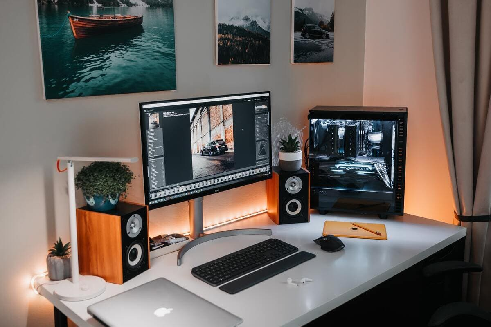

1. INTRODUCCIÓN ¿QUÉ ES EL ORDENADOR?
 Los primeros ordenadores surgen cuando el ser humano necesita realizar complicados cálculos y operaciones matemáticas con enormes cantidades de datos, de forma rápida y eficiente (por ejemplo, obtención de censos electorales, diseños aeronáuticos y espaciales, complejos cálculos científicos, códigos militares, etc.). La realización de tales tareas exclusivamente mediante “lápiz y papel” sería imposible sin ayuda (requeriría de muchísimo tiempo, recursos y personal).
Los primeros ordenadores surgen cuando el ser humano necesita realizar complicados cálculos y operaciones matemáticas con enormes cantidades de datos, de forma rápida y eficiente (por ejemplo, obtención de censos electorales, diseños aeronáuticos y espaciales, complejos cálculos científicos, códigos militares, etc.). La realización de tales tareas exclusivamente mediante “lápiz y papel” sería imposible sin ayuda (requeriría de muchísimo tiempo, recursos y personal).

Se hace necesario inventar una máquina que pueda procesar grandes cantidades de datos de forma automática y en el menor tiempo posible. Esta máquina es el ordenador.
Un ordenador es un dispositivo capaz de procesar información de forma rápida y eficiente. Se encarga de recibir datos, almacenarlos, hacer cálculos con ellos a gran velocidad, y presentar los resultados al usuario.
Si bien al principio los ordenadores surgieron para la realización rápida y automática de complejos cálculos matemáticos, hoy día se emplea en multitud de aplicaciones cotidianas (redactar un trabajo, reservar billetes de avión y hoteles, reproducir canciones o películas, retocar fotos o imágenes, buscar información en Internet, estudiar, enviar correos electrónicos, controlar máquinas y robots, trabajar en la oficina, etc.).
Debido a su gran utilidad y versatilidad, actualmente el ordenador se ha convertido en una herramienta básica en nuestras vidas.
Lectura facilitada
El proceso tecnológico o método de proyectos es el método de trabajo que utilizamos para resolver un problema o necesidad, que consiste en dividir el trabajo en distintas fases e ir superando cada una de ellas, para al final obtener el objeto tecnológico que resuelva ese problema o necesidad.
Si nos fijamos en la historia del hombre, podemos comprobar cómo a lo largo de ésta el hombre se ha ido encontrando con distintas necesidades (obtener agua, vivienda, transporte, comunicaciones, etc.) y para resolverlas ha inventado diferentes objetos tecnológicos.